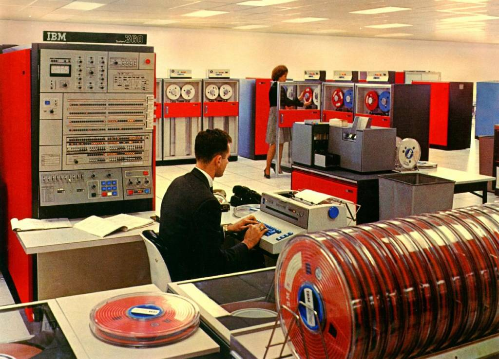
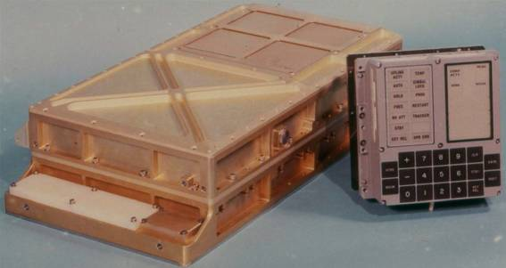
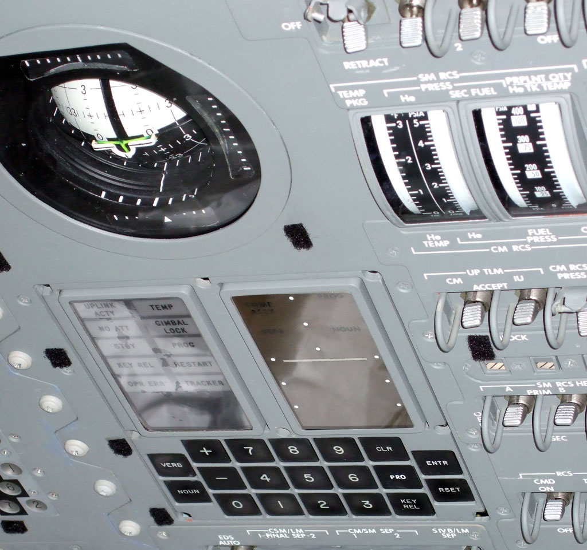
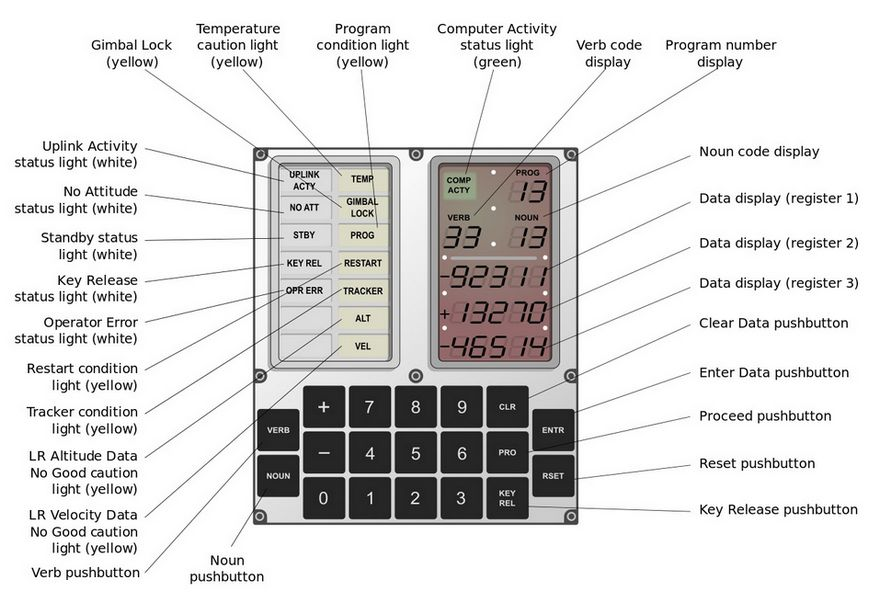
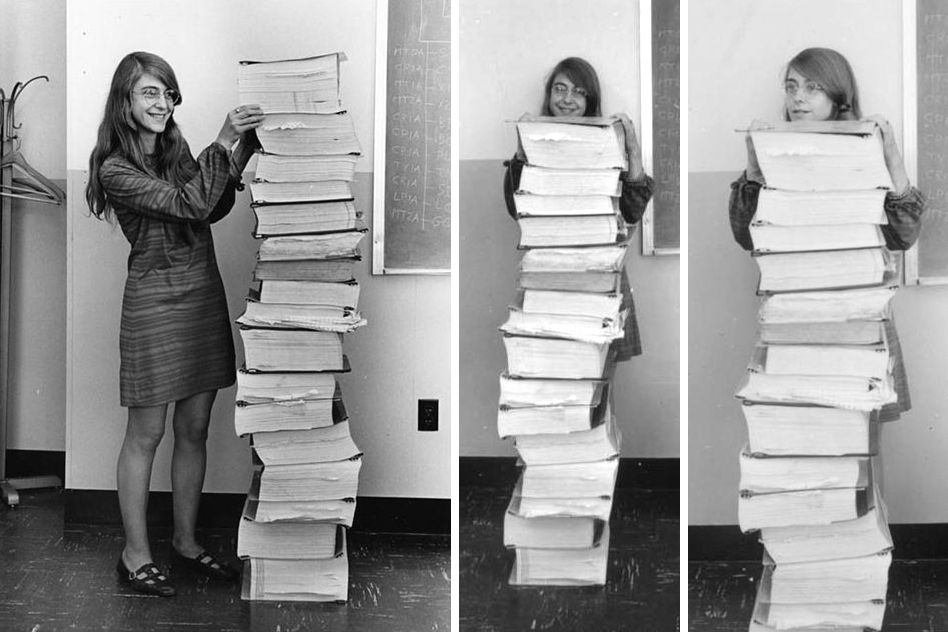

<!DOCTYPE html>
<html lang="en">
<head>
    
 
    <title>L'allunaggio</title>
	
	<header>
    <h1>Le tecnologie utilizzate</h1>
</header>
    <style>
	
	h1   {color:yellow ;}
	h2  {color:yellow ;}
	p {outline-color:blue;}
	
	
	p.solid {outline-style: solid;
	margin-left: 30 px;
	margin-right: 30 px ;}

        /* Stile per il menu */
        ul.a {
            list-style-type: none;
            margin: 0;
            padding: 0;
            background-color: blue;
            overflow: hidden;
        }
        li {
            float: left;
        }
        li a {
            display: block;
            color: white;
            text-align: center;
            padding: 14px 16px;
            text-decoration: none;
        }
        li a:hover {
            background-color: #111;
        }
    </style>
</head>
<body>


</body>
</html>
    <style>
	
	
	/* Stili per dispositivi con larghezza massima di 768px (tablet) */
@media (max-width: 768px) {
    .header {
        font-size: 1.5em; /* Dimensione del carattere ridotta per dispositivi più piccoli */
    }
}

/* Stili per dispositivi con larghezza massima di 480px (smartphone) */
@media (max-width: 480px) {
    .header {
        font-size: 1.2em; /* Dimensione del carattere ulteriormente ridotta per smartphone */
    }
}
			
 {
  box-sizing: border-box;
}

/* Position the image container (needed to position the left and right arrows) */
.container {
  position: relative;
}

/* Hide the images by default */
.mySlides {
  display: none;
}

/* Add a pointer when hovering over the thumbnail images */
.cursor {
  cursor: pointer;
}

/* Next & previous buttons */
.prev,
.next {
  cursor: pointer;
  position: absolute;
  top: 40%;
  width: auto;
  padding: 16px;
  margin-top: -50px;
  color: white;
  font-weight: bold;
  font-size: 20px;
  border-radius: 0 3px 7px 0;
  user-select: none;
  -webkit-user-select: none;
}

/* Position the "next button" to the right */
.next {
  right: 0;
  border-radius: 3px 0 0 7px;
}

/* On hover, add a black background color with a little bit see-through */
.prev:hover,
.next:hover {
  background-color: rgba(0, 0, 0, 0.8);
}

/* Number text (1/3 etc) */
.numbertext {
  color: #f2f2f2;
  font-size: 12px;
  padding: 8px 12px;
  position: absolute;
  top: 0;
}

/* Container for image text */
.caption-container {
  text-align: center;
  background-color: midnightblue;
  padding: 2px 16px;
  color: white;
}

.row:after {
  content: "";
  display: table;
  clear: both;
}

/* Six columns side by side */
.column {
  float: left;
  width: 16.66%;
}

/* Add a transparency effect for thumnbail images */
.demo {
  opacity: 0.6;
}

.active,
.demo:hover {
  opacity: 1;
}


p    {color: white;}
        body {
            font-family:Tahoma;
            margin: 0;
            padding: 0;
            background-color: midnightblue; 
			;
        }
        header {
            background-color:  midnightblue;;
            color: white;
            padding: 20px;
            text-align: center;
        }
        section {
            padding: 20px;
			
			
        }
		
		a.one:link {color:white;}
        a.one:visited {color:light blue;}
        a.one:hover {color:white;}
      
	  
		p {outline-color:blue;}

	p.solid {outline-style: solid;}
p {
    border: 2px solid blue; /* Aggiunge un bordo bianco di 2px ai paragrafi */
    padding: 10px; /* Aggiunge spazio interno di 10px tra il testo e il bordo */
	
}

ul.b {
			
		background-color: midightblue;	
  list-style-type: circle;
  color: white;
}
    
    </style>
</head>
<body>
	
<head>
  <meta charset="UTF-8">
  <meta name="viewport" content="width=device-width, initial-scale=1.0">
  <title>Menu</title>
  <link rel="stylesheet" href="styles.css">
</head>


<nav>
  <ul class="a">
    <li><a  href="index.html">home</a></li>
	<li><a  href="pagina2.html">la guerra fredda</a></li>
    <li><a href="pagina3.html">le tecnologie utilizzate</a></li>
    <li><a href="pagina4.html">fonti</a></li>
    
  </ul>
</nav>


  
  
</head>
<body>


<section>
    <h2>le tecnologie utilizzate</h2>
	
<p>
	


 A bordo della navicella che portò i primi uomini sulla Luna, vi erano due macchine identiche, chiamate Apollo Guidance Computer, che insieme alla genialità degli ingegneri e di tutti i partecipanti al progetto ha permesso di portare l'uomo sulla Luna.

I mainframe di IBM, ovvero i potentissimi computer di Houston e di altre diciassette stazioni monitoravano l’andamento della missione,
 potevano contare su una memoria di 256 KB di RAM, ed 1MB di memoria ROM, per i tempi un'enormità.

<br>
Invece, a bordo dell’Apollo 11, vi erano in totale 4 macchine:
<br>

-Il Saturn Launch Vehicle Digital Computer di IBM, che ha portato il razzo dalla postazione di lancio fino all’orbita terrestre
<br>
-Due unità di Apollo Guidance Computer della NASA, sistemati uno nel Modulo di Comando e l’altro nel Modulo Lunare
<br>
-Un Apollo Abort Guidance System, da usare in caso di emergenza, nella sfortunata evenienza in cui gli altri computer fallissero il compito durante l’atterraggio sulla Luna.

<br>
<br>
Il computer che portò il primo uomo sulla Luna fu dunque l’Apollo Guidance Computer, anche conosciuto come AGC, una delle invenzioni più geniali mai create.

In un momento storico in cui i computer, occupavano intere stanze, una valigetta dalle dimensioni di 32 x 61 x 17 centimetri ed un peso di soli 32 Kg, rappresentava un risultato davvero incredibile. Le sue dimensioni così contenute furono possibili grazie all’impiego di circuiti integrati: l’AGC fu il primo ad esserne dotato, per un totale di 2800 circuiti, che permettevano di ridurre l’ingombro e di migliorare le prestazioni di calcolo.

Il computer a bordo della navicella Apollo 11 era dotato di una singolare interfaccia: dal momento che gli astronauti non erano tecnici informatici, avevano bisogno di un’interfaccia semplificata per impartire i comandi necessari alle macchine.

Ciò fu possibile grazie alla presenza di una tastiera chiamata DSKY, ovvero una tastiera numerica dotata di display essenziale, che permetteva l’inserimento dei comandi grazie all’immissione dei relativi codici numerici associati.

<br>
<br>
 l’Apollo Guidance Computer sfruttava un multitasking di tipo “non preventivo”: ciò vuol dire che, oltre ad essere in grado di stabilire una priorità per
 eseguire prima i programmi più importanti per l’andamento della missione, i software dovevano “cedere periodicamente il controllo al sistema operativo”.

Inoltre, il software dell’AGC era programmato per non crashare mai: nessun errore o allarme avrebbe dovuto impedire al computer di continuare ad elaborare
 le operazioni fondamentali per consentire l’allunaggio in totale sicurezza.

Proprio per questo motivo, la prima missione sulla Luna si concluse brillantemente: pochi minuti prima di atterrare, la centrale di Houston ricevette
 una richiesta di aiuto da parte di Armstrong, il quale si accorse di una spia di allarme che segnalava qualche anomalia.

Il terribile errore 1202 rischiava di mandare a monte l’atterraggio sul suolo lunare, ma grazie alla progettazione del software dell’AGC, le operazioni
 si conclusero nel migliore dei modi.

<br>
<br>
<br>
  <a href="https://github.com/chrislgarry/Apollo-11" style="color: yellow;">Oggi il codice sorgente dell’AGC è di pubblico dominio, clicca qui per vederlo!</a>


</p>

<br>
<div class="container">

  <!-- Full-width images with number text -->
  <div class="mySlides">
    <div class="numbertext">1 / 4</div>
      
  </div>

  <div class="mySlides">
    <div class="numbertext">2 / 4</div>
      
  </div>

  <div class="mySlides">
    <div class="numbertext">3 / 4</div>
      
  </div>

  <div class="mySlides">
    <div class="numbertext">4 / 4</div>
      
  </div>

  

  <!-- Next and previous buttons -->
  <a class="prev" onclick="plusSlides(-1)">&#10094;</a>
  <a class="next" onclick="plusSlides(1)">&#10095;</a>

  <!-- Image text -->
  <div class="caption-container">
    <p id="caption"></p>
  </div>

  <!-- Thumbnail images -->
  <div class="row">
    <div class="column">
      
    </div>
    <div class="column">
      
    </div>
    <div class="column">
      
    </div>
    <div class="column">
      
    </div>
    
  </div>
</div>
<script>
let slideIndex = 1;
showSlides(slideIndex);

// Next/previous controls
function plusSlides(n) {
  showSlides(slideIndex += n);
}

// Thumbnail image controls
function currentSlide(n) {
  showSlides(slideIndex = n);
}

function showSlides(n) {
  let i;
  let slides = document.getElementsByClassName("mySlides");
  let dots = document.getElementsByClassName("demo");
  let captionText = document.getElementById("caption");
  if (n > slides.length) {slideIndex = 1}
  if (n < 1) {slideIndex = slides.length}
  for (i = 0; i < slides.length; i++) {
    slides[i].style.display = "none";
  }
  for (i = 0; i < dots.length; i++) {
    dots[i].className = dots[i].className.replace(" active", "");
  }
  slides[slideIndex-1].style.display = "block";
  dots[slideIndex-1].className += " active";
  captionText.innerHTML = dots[slideIndex-1].alt;
}
</script>

  <h2>Il ruolo di Margaret Heafield Hamilton </h2>
  
    <p>Margaret Heafield Hamilton, nata a Paoli, 17 agosto 1936 è un'informatica, ingegnere e imprenditrice statunitense.

È stata la direttrice del Software Engineering Division del MIT Instrumentation Laboratory, che sviluppò il software di bordo per il programma Apollo.
 Il team della Hamilton ha risolto le complicazioni relative allo sbarco dell'Apollo 11 sulla Luna, garantendo il successo della missione. Nel 1986,
 Hamilton ha fondato la Hamilton Technologies, Inc. nella città di Cambridge, Massachusetts. 
 <br>
 
 È colei che infatti ha reso possibile ad Armstrong il celebre passo per cui è tutt’oggi ricordato.


E’ stata anche la direttrice del Software Engineering Division del MIT Instrumentation Laboratory, che con la sua guida sviluppò il software di bordo per i
l programma Apollo. Infatti il team della Hamilton risolse le complicazioni relative allo sbarco dell’Apollo 11 sulla luna, garantendo il successo della 
missione.


	

</p>


 <br>
 
 
 
 <h2>le conseguenze tecnologiche </h2>


<ul class="b">
  <li>1 - L'elettronica: i microchip derivano dai circuiti integrati usati per il computer di bordo degli Apollo, e dalle tecnologie lunari si sono poi
  evoluti anche telefoni cellulari e pc.
</li>
<br><br>
<li>
2 - La Tac: l'antenato dei moderni sistemi per la tomografia assiale computerizzata, ormai indispensabile in molte indagini mediche, nacque per analizzare
 la struttura dei nuovi materiali tecnologici ed evidenziarne eventuali difetti di produzione.


</li>
<br><br><br>
<li>
3 - I filtri per l'acqua: la tecnologia utilizzata per purificare l’acqua degli angusti abitacoli degli Apollo è, con poche modifiche, alla base dei sistem
i che oggi si utilizzano per potabilizzare l'acqua in diversi contesti, in particolare nelle regioni del mondo dov'è carente o contaminata da virus e batteri.
</li>
<br><br><br>
<li>
4 - Le coperte termiche: dai fogli multistrato di metallo derivano le leggerissime "coperte termiche" che si possono utilizzare per le escursioni all'aria
 aperta e che si vedono usare spesso in molti film e, nella realtà, nelle emergenze - in occasione di disastri naturali o durante le operazioni di primo
 soccorso ai migranti recuperati in mare.

</li>
<br><br><br>
<li>
5 - Gli utensili a pila: fin dall'inizio dell'Era Spaziale, per gli astronauti sono stati re-inventati utensili (per esempio il trapano) alimentati 
a batteria: oggi sono ampiamente in uso e ce n'è di ogni tipo, ma qualche decennio fa erano costose invenzioni.
</li>
<br><br><br>
<li>
6 - Il cibo liofilizzato: anche se forse entusiasma poco, in alcune situazioni, anche di vita comune, i prodotti liofilizzati si sono imposti per necessità 
o per praticità. È con le missioni Apollo che l'industria ha investito e messo a punto le tecniche per liofilizzare gli alimenti, deidratandoli a bassa
 temperatura, preservandone il valore nutritivo e (in parte) il gusto.

</li>
<br><br><br>
<li>


7 - Gli scarponi: è dai veri moon boot (gli stivali lunari) degli astronauti che si sono evoluti gli scarponi isolanti da montagna per camminare sulla neve.
 </li>
 <br><br>
<li>
8 - Le tute degli astronauti: le super costose (fino a 2 milioni di euro l'una) e super tecnologiche (130-150 kg tra protezioni, sensori e hi-tech vario) 
hanno dato origine all'immesa famiglia delle attuali tute ignifughe, termoregolate, di protezione: dai pompieri ai piloti di Formula 1, ecco un altro "regalo" che arriva direttamente dall'alba dell'Era Spaziale. Dal tessuto di quelle pprime tute sono derivati anche i materiali resistenti ed economici oggi usati per le tensostrutture (piscine e altri sport indoor) e per la copertura degli stadi.
</li>


  

</ul>
<br>
<br>
<br>

<p> microchip che ha portato l'uomo sulla luna comparato a uno moderno: </p>


<button onclick="document.getElementById('myImage').src='immagine1pg3.jpg'"width="400" height="250">microchip Apollo 11</button>


<button onclick="document.getElementById('myImage').src='immagine2pg3.avif'">moderni microchip </button>

</body>
</html>